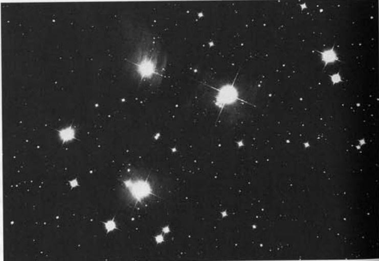
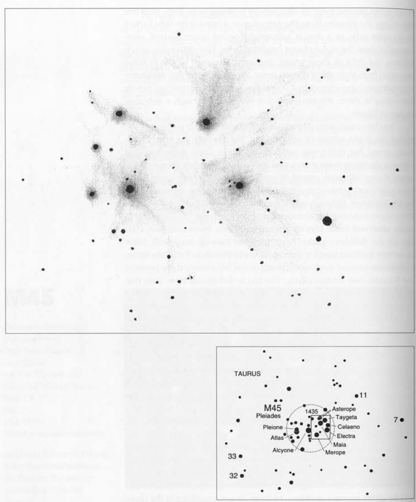

昴星团 · Pleiades / Seven Sisters (M45)
在清冽的冬夜里，这颗璀璨的一等疏散星团高悬于金牛座肩部。金牛座V形的面部（不含毕宿五）本身即是另一个更明亮的疏散星团——毕星团。这两大星团共同构成了天穹中最迷人的景观，但更为庞大的——
On crisp winter evenings, this brilliant 1st-magnitude open cluster rides high on the shoulder of Taurus the Bull, whose V-shaped face (itself minus Aldebaran) is another, brighter open cluster—the Hyades. Together these clusters are among the most alluring sights in the heavens. But the larger—
| 参数 / Parameter | 值 / Value |
|---|---|
| 类型 / Type | 疏散星团 / Open Cluster |
| 所属星座 / Constellation | 金牛座 / Taurus |
| 赤经 / RA (Alcyone) | 3h 47m.5 |
| 赤纬 / Dec (Alcyone) | +24° 06'.3 |
| 视星等 / Magnitude | 1.5 |
| 视直径 / Angular Diameter | 2° |
| 距离 / Distance | 407 光年 / 407 ly |
| 实际直径 / Actual Diameter | 14 光年 / 14 ly |
| 年龄 / Age | 7000万年 / 70 million years |
| 成员星数量 / Number of Stars | ~100 |
| 发现历史 / Discovery | 古代文明时期已知 / Known since antiquity |
| NGC 编号 / NGC | 未收录 / Not listed |
另一场旷日持久的辩论围绕着星团周围的星云状物质是否能用肉眼观测到。一些人认为这种朦胧感只是一种错觉——由密集分布的恒星形成的视觉假象，它们未分辨的光线如同低倍率下观测的双星般显得模糊不清。然而另一些观测者坚称，这个星团正如丁尼生在《洛克斯利大厅》中描绘的那样：
"Many a night I saw the Pleiades, rising through the mellow shade, glittering like a silver braid."
"多少夜晚我见昴星团升起，在柔和的月光下洒落温暖光芒，宛如银丝编织的罗网。"
Another lingering debate concerns whether the nebulosity associated with the cluster can be seen with the naked eye. Some argue that the haze is just an illusion, a vision created by the tight gathering of stars whose unresolved light simply appears fuzzy—just as close doubles do at low power. Others, however, claim that the cluster appears just as Tennyson described it in Locksley Hall:
侯斯顿曾不以为然地说："为什么人人都对昴星团的星云争论不休？用肉眼当然能看见！"接着他对质疑者发表了一番生动形象的评论。我没有回应，他也不期待回答；他知道自己是在对知音布道。不过斯基夫指出，部分被观测到的星云状物质可能是散射的星光。他建议通过筛选阿利昂星表来验证这个假说。
Houston once scoffed, "Why does everyone fuss over the Pleiades nebulosity? Of course you can see it with the naked eye!" He went on to say something colorful about the naysayers. I did not reply and he didn't expect a response; he knew he was preaching to the choir. However, Skiff points out that some of the perceived nebulosity may be scattered starlight. He suggests testing this hypothesis by screening Alcyone and observing.
这个有着7000万年历史的星团聚集了约100颗恒星，分布在一个直径14光年的球状区域内。它以每秒约25英里的速度在太空中穿行，需要约2000年才能移动相当于一个月球视直径的距离。昴星团中最亮的恒星都在高速自转，其中昴宿增十二的转速比太阳快约100倍。而位于星团中心最明亮的昴宿六，其亮度更是太阳的千倍之多。
The 70-million-year-old cluster contains about 100 stars in a sphere 14 light-years in diameter. It is sailing through space at about 25 miles per second, and it will take them about 2,000 years to move an apparent distance of one moon diameter. The brightest Pleiads are all rapidly rotating, with Pleione spinning about 100 times faster than our sun. And Alcyone, the centralmost and brightest Pleiad, is a thousand times more luminous than the sun.

透过望远镜，昴星团及其伴星云恰好能充满低倍率视场，这正是观测它们的最佳视角。其中最亮的九颗成员星恰好分布在1度视场内（实际直径为7光年）。在暗夜条件下，星团犹如缀满璀璨宝石的蛛网棺椁。各星体间被薄纱般的星云雾霭相互联结，其中最明亮的云雾环绕着昴宿四（金牛座23），被称为昴宿四星云（IC349）。
Through a telescope the Pleiades and its attendant nebulosity fill a low-power field, where they are best seen. The nine brightest members fit well in a 1° field (a true diameter of 7 light-years). From dark skies, the cluster looks like a cobwebbed coffin filled with glistening jewels. The individual Pleiads are interconnected by gauze-like veils of nebulosity, the brightest of which surrounds the star Merope (23 Tauri), and is called the Merope Nebula (IC349).
梅洛普星正南方有一片星云凝聚区NGC 1435，亦称"坦普尔星云"。1859年W·坦普尔使用4英寸折射望远镜首次观测到这片星云，将其描述为"如同镜面上呵出的雾气般朦胧的淡斑"。1874年路易斯·斯威夫特通过2英寸折射镜在25倍放大率下再度观测到它。一个世纪后，侯斯顿使用8英寸反射望远镜从亚利桑那州南部观测，发现这片天区从边缘到边缘都交织着结构精美的明亮星云花环。有趣的是，双星观测大师S·W·伯纳姆曾用伊利诺伊州迪尔伯恩天文台的大型18英寸折射望远镜却未能窥见此星云——微弱弥散的辉光往往能逃过大口径望远镜的捕捉。
Just south of Merope is a condensation of nebulosity NGC 1435, also known as "Tempel's Nebula," which was first noticed in 1859 by W. Tempel with a 4-inch refractor. He described it as a faint stain of fog, like a breath on a mirror. In 1874 Lewis Swift saw it in a 2-inch refractor at 25×. One century later Houston used an 8-inch reflector from southern Arizona to see the field laced from edge to edge with bright wreaths of delicately structured nebulosity. Interestingly, the great double-star observer S. W. Burnham could not see this nebulosity with the great 18-inch refractor at Dearborn Observatory in Illinois. But faint, diffuse glows can evade large-aperture telescopes.

乍看之下，昴宿五星云网络犹如一道渐窄的彗尾。但若您肯花时间用望远镜扫视其周边区域，便会发现这片星云仅是向西延伸的巨大扇形物质的一部分。采用低倍率镜头静静凝视星团片刻，偶尔轻叩镜筒，便能观测到贯穿星云的宽阔暗带——尤其在星团中心区域，那里缭绕的朦胧星纱正为昴宿六披上婚纱。请结合星图与照片重点搜寻显著的星云条纹，特别是在昴宿四与昴宿一周围。
At first glance the Merope Nebula network looks like a tapered comet tail. But if you take the time to sweep the telescope back and forth over its surroundings, you might notice that this patch is but part of a larger fan of material that sweeps westward. Using low magnification, just stare at the cluster for a while and occasionally tap the telescope tube. You should start to see wide dark lanes running amid the nebulosity, especially at the cluster's center, where it drapes like a
🔒 受限于篇幅，本文仅展示部分样章。O'Meara 先生完整的观测手记、实测数据及未公开的独家配图，请参阅原著双语典藏版。
👉 立即在闲鱼获取《DEEP-SKY COMPANIONS》中英双语高清典藏版